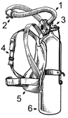

Scuba diving is a form of underwater diving in which a diver uses a self contained underwater breathing apparatus (scuba) to breathe underwater.[1]
Unlike other modes of diving, which rely either on breath-hold or on air pumped from the surface, scuba divers carry their own source of breathing gas, (usually compressed air),[2] allowing them greater freedom of movement than with an air line or diver's umbilical and longer underwater endurance than breath-hold. Scuba equipment may be open circuit, in which exhaled gas is exhausted to the surroundings, or closed or semi-closed circuit, in which the breathing gas is scrubbed to remove carbon dioxide, and the oxygen used is replenished from a supply of feed gas before being re-breathed.
history

Old School tank
By the early twentieth century, two basic templates for scuba, (self-contained underwater breathing apparatus), had emerged; open-circuit scuba where the diver's exhaust is vented directly into the water, and closed-circuit scuba where the diver's unused oxygen is filtered from the carbon dioxide and recirculated. The first commercially successful scuba sets were the Aqualung twin hose open-circuit units developed by Emile Gagnan and Jacques-Yves Cousteau, in which compressed air carried in back mounted cylinders is inhaled through a demand regulator and then exhaled into the water adjacent to the tank.[8]
The single hose two stage scuba regulators trace their origins to Australia, where Ted Eldred developed the first example of this type of regulator, known as Porpoise scuba gear. This was developed, because patents protected the Aqualung's twin hose design. The single hose regulator separates the cylinder from the demand valve, giving the diver air at the pressure at their mouth, not that at the top of the cylinder.